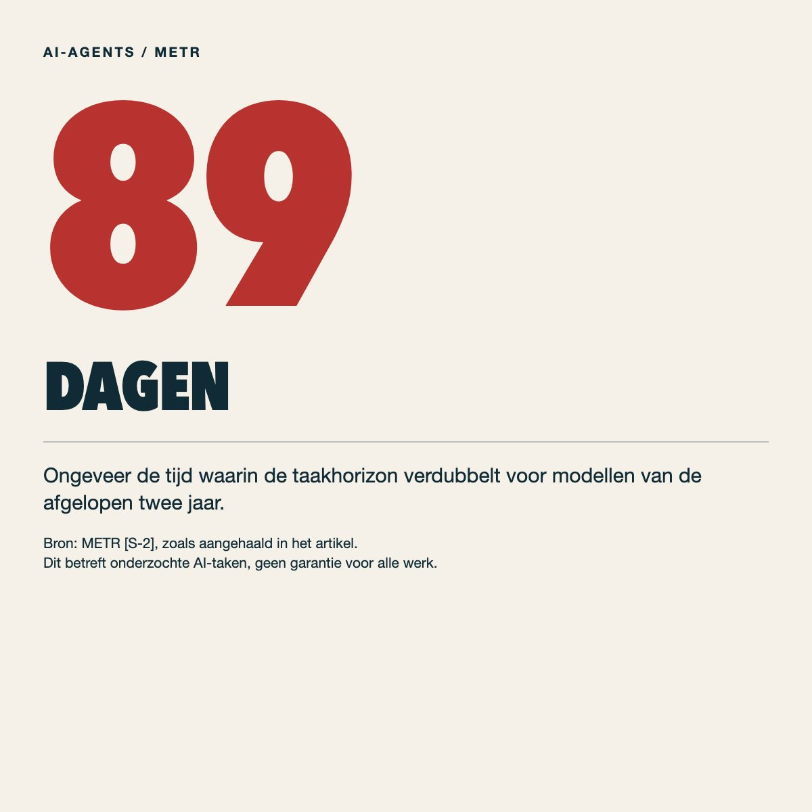
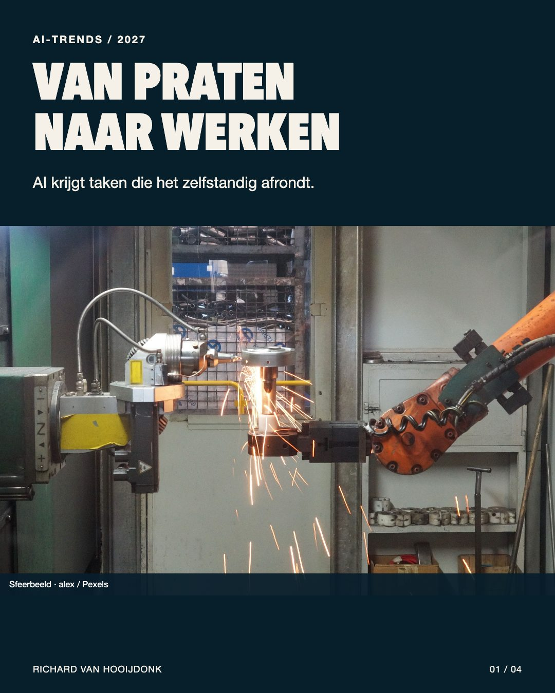
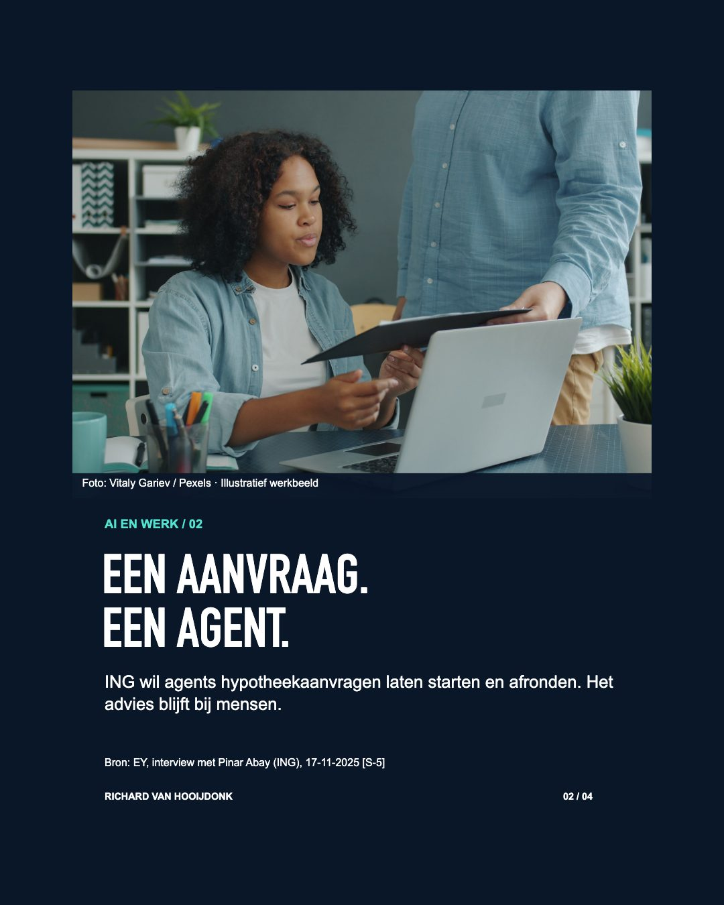
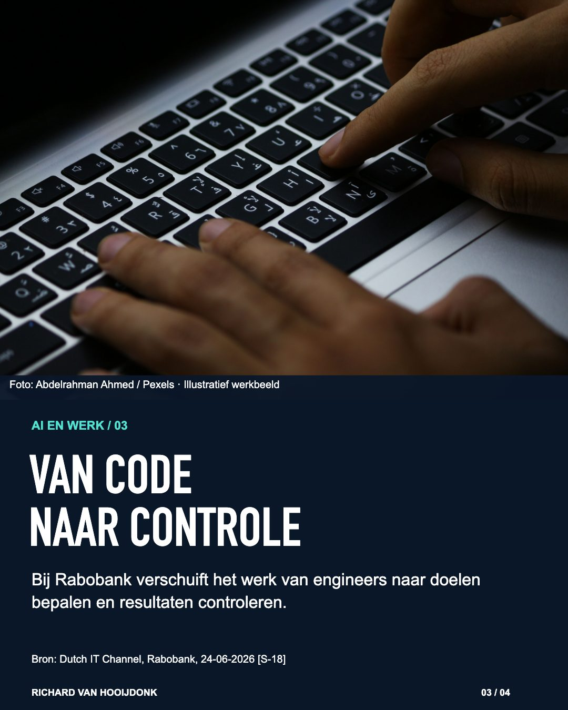
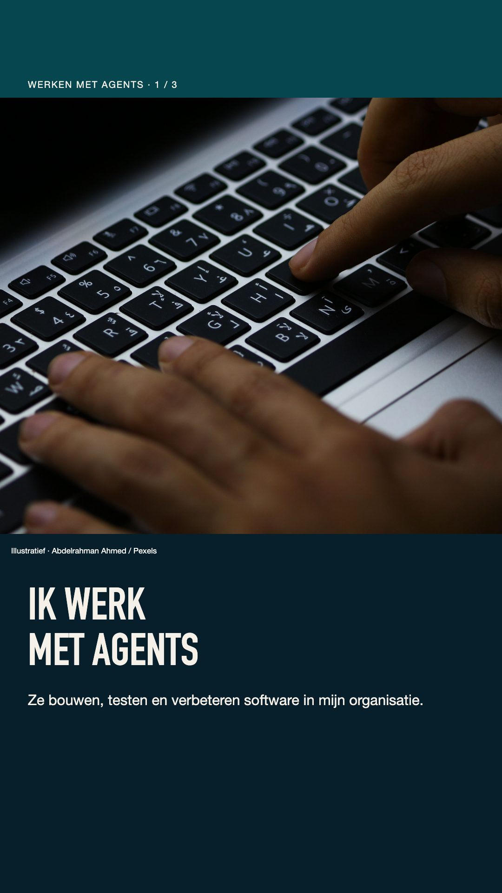
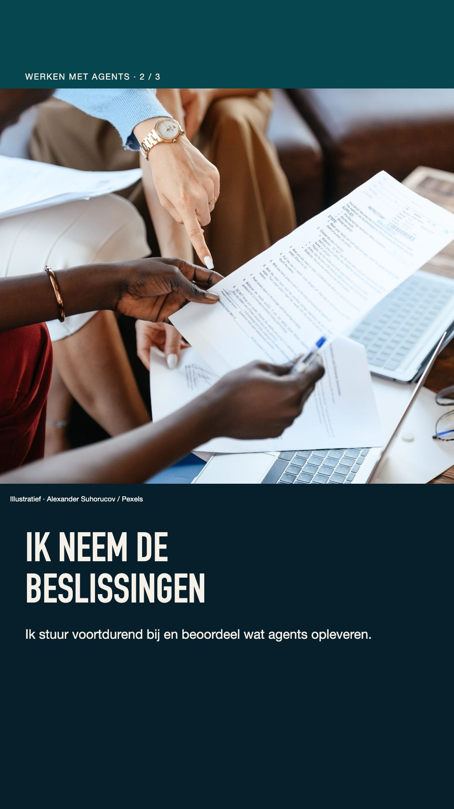
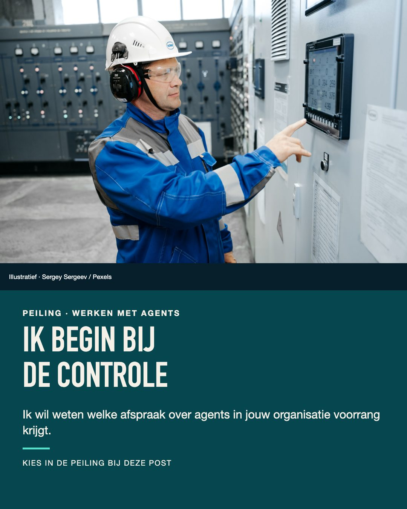
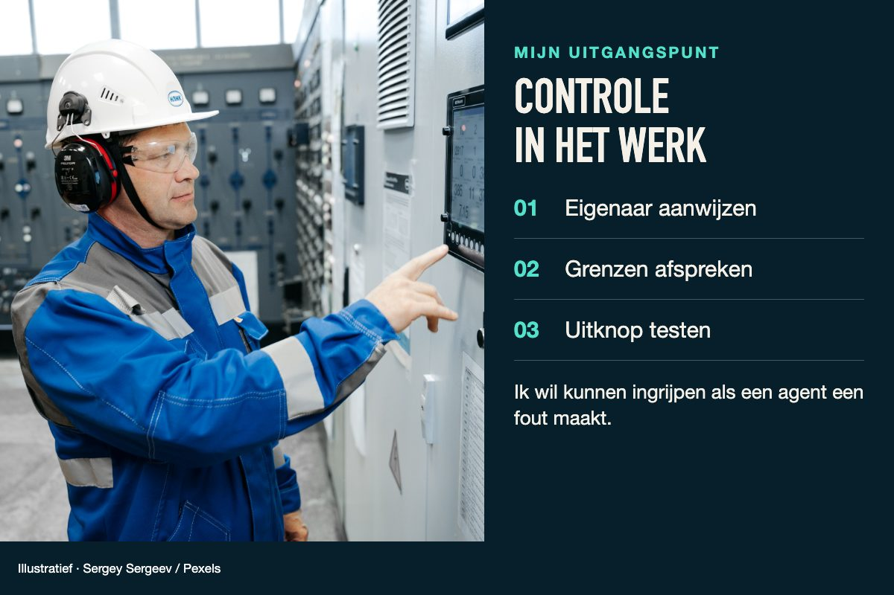
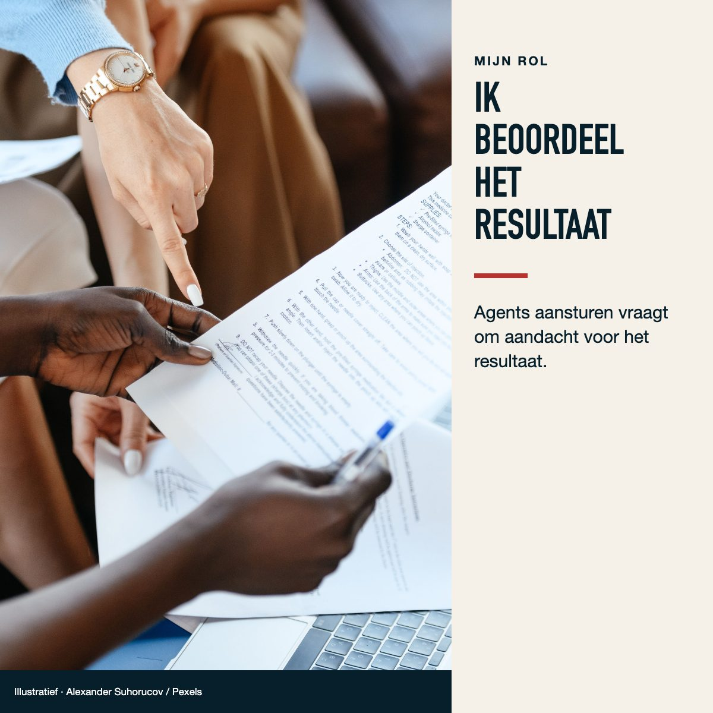

C1 De taakhorizon 1 beeld
Eén cijfer in een rustige typografische compositie.
Posttekst (voorstel)
# LinkedIn Ik vind de ontwikkeling van de taakhorizon een nuttige maat om AI te volgen. METR meet hoe lang modellen zelfstandig aan een taak kunnen werken. Voor de modellen van de afgelopen twee jaar verdubbelt die horizon volgens het onderzoek ongeveer elke 89 dagen. [S-2] Dat is het cijfer op deze kaart. Het gaat om de onderzochte AI-taken. Ik kan daar niet uit afleiden dat iedere taak in een organisatie even snel verder kan worden gedelegeerd. Ik wil daarom steeds naast de modelprestatie zien hoeveel controle een concrete toepassing vraagt. # X Ik volg de taakhorizon van AI: voor modellen van de afgelopen twee jaar verdubbelt die ongeveer elke 89 dagen volgens METR [S-2]. Dit geldt voor de onderzochte taken. Ik zie het niet als garantie voor al het werk. <!-- Optionele begeleidende posttekst: aan/uit per uiting. Bron: ~/toezicht-gereedschap/rij-artikelen/trends-v2b/v5_writer.json, article.body_markdown. Trend 1; S-2. -->
Herkomst: astra: Het grote getal, gemini: Typografische Hamer


Social



Vier fotografische kaarten voeren van uitvoering naar menselijke regie.
Posttekst (voorstel)
Herkomst: astra: Vijf stappen, één grens, gemini: Evolutie-Carrousel, canva · Foto: Peter Xie / pexels; Vitaly Gariev / pexels; Abdelrahman Ahmed / pexels; Sergey Sergeev / pexels
Een grote robotfoto met een compacte duiding van fysieke AI.
Posttekst (voorstel)
Herkomst: astra: De taak op tafel, canva · Foto: Hyundai Motor Group / pexels
Een letterlijk ik-citaat op een monumentaal kleurvlak boven werkfotografie.
Posttekst (voorstel)
Herkomst: gemini: Quote-Collage, canva · Foto: Alexander Suhorucov / pexels
Eén dominante robotfoto draagt een korte vergelijking van antwoord en uitvoering.
Posttekst (voorstel)
Herkomst: gemini: Contrast Split, astra: Bewering en bewijs, canva · Foto: Diego Martinez / pexels
Vier fotografische hoofdstukken verbinden uitvoering met mijn eigen rol.
Posttekst (voorstel)
Herkomst: canva, astra: Vijf stappen, één grens · Foto: Freek Wolsink / pexels; Abdelrahman Ahmed / pexels; Vitaly Gariev / pexels; Sergey Sergeev / pexels


Een verticale fotoreeks volgt uitvoering, beoordeling en ingrijpen.
Posttekst (voorstel)
Herkomst: canva, astra: De werkdag in scènes · Foto: Abdelrahman Ahmed / pexels; Alexander Suhorucov / pexels; Sergey Sergeev / pexels

Een bedieningspaneel maakt ingrijpen tastbaar bij een echte keuzevraag.
Posttekst (voorstel)
Herkomst: canva, astra: Bewering en bewijs · Foto: Sergey Sergeev / pexels
Een brede werkfoto opent een reeks persoonlijke observaties.
Posttekst (voorstel)
Herkomst: canva, astra: De werkdag in scènes · Foto: Abdelrahman Ahmed / pexels

Een redactionele foto-omslag en een praktisch binnenbeeld dragen een persoonlijk artikel.
Posttekst (voorstel)
Herkomst: canva, astra: Het bestuurdersdossier · Foto: Freek Wolsink / pexels; Sergey Sergeev / pexels
Een turquoise nieuwsstrook boven werkfotografie presenteert een persoonlijke bedrijfsupdate.
Posttekst (voorstel)
Herkomst: canva, astra: De taak op tafel · Foto: Abdelrahman Ahmed / pexels

De tekst staat op zichzelf, met een optioneel beeld van gezamenlijk beoordelen.
Posttekst (voorstel)
Herkomst: canva, astra: De taak op tafel · Foto: Alexander Suhorucov / pexels